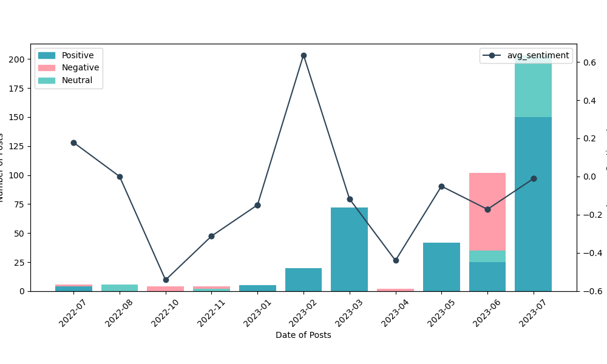
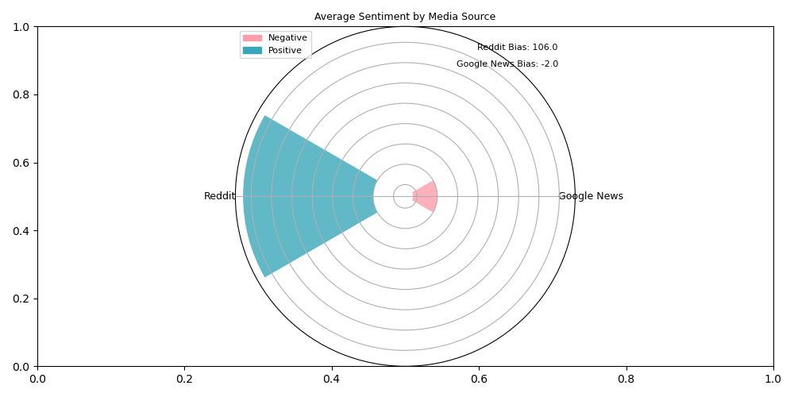
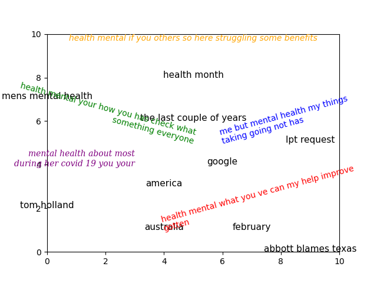
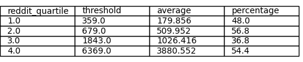
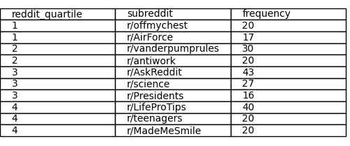

How is mental health in today's world?
Introduction and Objectives
As we approach World Mental Health Day on October 10, this project will primarily revolve around the theme of mental health.
Using data collected from Reddit threads and Google News, my primary objective is to gain deeper insights into the current status of mental well-being a global scale. Moreover, I expect to make a significant contribution to ongoing efforts to raise mental health awareness and assist those in need.
Data Sources and Methodology
To explore this topic, I collected related-Reddit posts and Google News articles, which are popular sources of information and discussion. In the Jupyter environment, I purposely advanced SQL queries to examine the social awareness and mental well-being status over the past year. Finally, I utilized the Python Plotly package to visualize analysis outcomes.
Data Analysis
Alarming Surge in Mental Health Concerns
Python's NLTK (Natural Language Toolkit) library was used for sentiment analysis. The polarity score ranges from -1 to +1, where negative values denote negative sentiment, positive values denote positive sentimemt, and 0 for neutral one. Positive values reveal a more positive tone, while negative values mean a more negative tone, as measured by the bias score.
Since last February, there has been a sudden resurgence in posts regarding mental health, amidst the sharp decline in positive attitudes towards them, necessitating prompt awareness and actions to tackle the possible detrimental effects on people's psychological well-being and social functioning. It serves as a warning flag for policymakers and stakeholders to promptly enact countermeasures against any negative repercussions.
My analysis revealed distinct sentiment and bias patterns on Reddit and Google News, reflecting the varied nature of these platforms and their influence on public opinion.
Reddit's Supportive Environment
The optimistic trend seen in the Reddit data (avg. polarity: +0.16, bias: +106) implies that the site fosters a helpful and upbeat environment for discussions about mental health wherein content empowers positivity and inspires hope. It highlights the platform's nature, where users freely share personal stories, feelings, and opinions within specific subreddits.
On the other hand, top trending titles in favoured subreddits on the matter indicate that mind wellness is not limited to personal health alone but intersects with various aspects of life r/MadeMeSmile, work r/antiwork, and scientific understanding r/science.
Top Engaging Reddit Posts and Google News Articles on Mental Health
Google News, functioning as a news aggregator, shows a slight negative sentiment bias (avg. polarity: -0.03, bias: -2) in which mental wellness subjects are depicted in articles with a more critical or problem-focused lens than solutions, negatively impacting public perception and understanding of the matter. The need for a more objective and unbiased perspective on its news is noted. Moreover, its top engagement from reputable publishers like NPR, CNN, and Forbes, which represent a varied spectrum of opinions, implies its spread as a common topic around the globe today.
Australia and the U.S. lead in mental health awareness
I projected geographical references from scraped data on an interactive map using the SpaCy library. The map shows mental health mentions by area. By evaluating the distribution, I found that Australia and the US had stronger media coverage and public concern for mental health, although with some disparities in participation between areas.
Geography and Mental Health: Exploring the Interactive Map
Leveraging the power of SpaCy, I delved into the intricate tapestry of geographical references within my scraping database. The output showed that Australia and the United States had high levels of media attention and public concern for cognitive health, but with some differences. Australia had more frequent mentions in articles, while the United States had more diverse and involved regions.
Regardless of the scenario, it is evident that both nations have a strong grasp of the crucial significance and tremendous challenges connected with emotional stability. They pointed out the imperative need for continuous backing and intervention, not only at the national level but also on a regional scale.
How Mental Health Issues Are Becoming More Visible
The following graph displays my journey towards gaining deeper insights into topic modelling using Latent Dirichlet Allocation (LDA) and associated keywords (by SpaCy).  The last couple of years have been challenging due to the COVID-19 pandemic and its far-reaching effects on physical, mental, and social cognition, particularly in America and Australia.
Rising in Health Month campaigns aim to raise awareness and promote the prevention of different health conditions and diseases. For example, November is Movember, and May is Mental Health Awareness Month. Additionally, February poses challenges to climate anxiety, notably in the northern hemisphere due to the cold and darkness. It emphasises the need to address the psychological toll of climate change and develop strategies to promote resilience.
The rising demand for digital well-being is reflected in online self-help and LPT requests (an acronym for r/LifeProTips) on sites like Reddit. It highlights the reliance on online platforms for advice and support, emphasising the need for a healthy balance and mindful use of technology.
More social awareness and assistance are needed for the pressing issue of men's mental health, which has long suffered from stigma and insufficient attention. Men face a greater risk of suicide than women, but they are more reluctant to ask for help because of gender norms or social racism.
Deeper Analysis
I persisted in utilising SQL queries with the NTILE function to study deeper the feature of the Reddit community for mental wellness in the modern digital world.
Reddit offers a diverse range of mental health-focused subreddits, inspirational posts, and discussion forums, showing a vibrant community involved in sharing experiences, seeking advice, and obtaining knowledge on mental health concerns.
Conclusion
Mental well-being is a widespread concern nowadays that we should all care about. Recognising its diverse perspectives is essential to ensure there are no biased norms or stereotypes. Technology, climate change, social isolation, work conditions, and cultural identity pose different influences on human emotional resilience and the empowering journey of self-help. Ultimately, this is a complex issue needing comprehensive and inclusive efforts to enhance the holistic wellness of the community on a positive path.
Acknowledgments
For making so much good information available to the public, I am extremely grateful to Reddit and Google News. The superb tools provided by the NLTK, SpaCy, and Plotly libraries are also greatly appreciated; they were critical to the accomplishment of this goal.